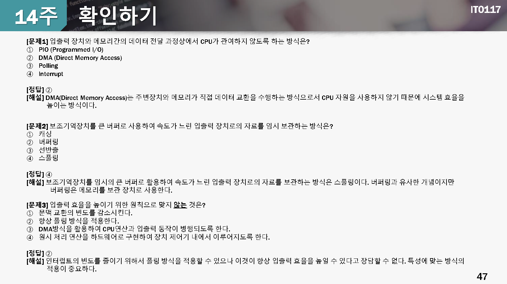

14 입출력 시스템
학습목표
- 운영체제의 입출력 시스템 구조를 설명할 수 있다.
- 입출력 하드웨어의 원리와 입출력 시스템을 기술할 수 있다.
- 입출력 성능의 주요 요소를 설명할 수 있다.
학습내용
확인하기 퀴즈

정리하기
- 입출력 장치는 속도가 느리고 자료를 표현하는 방식이 다양함
- 입출력 장치는 특정 포트나 버스에 연결되어 컴퓨터에 연결되며 입출력 제어기를 통하여 입출력 장치에게 명령어나 자료를 전달함
- 폴링 방시과 입출력 시스템 방식을 사용하여 CPU가 직접 입출력 장치에게 데이터나 명령어를 직접 수행하거나, DMA를 이용하여 수행함
- 입출력 시스템은 실제 장치를 구동하는 장치 드라이버와 입출력 시스템으로 구분되어 사용자에게 일관된 인터페이스를 제공함
- 입출력 시스템 호출은 많은 CPU자원을 사용함. 문맥전환, 인터럽트 처리 및 자료 복사에 따른 오버헤드가 크므로 입출력 효율을 높여야 함
- stat() 함수를 호출하면 입출력 시스템의 구조체에 파일에 대한 다양한 정보가 저장되며 이를 이용하여 파일에 대한 여러 가지 정보를 획득할 수 있음